APICompass turns questions about invented operational records into traceable, read-only data-quality reports. DataCheck computes the findings; Gemini explains them.
Cloud answers, recovery and alert delivery verified. Real Gemini/DataCheck/S3 questions, restored account and saved-action execution, scheduled jobs and ALARM/OK email delivery have passed targeted acceptance. The individual operator signed in with MFA and opened the dashboard. A fresh complete answer passed after the original provider SDK was restored; intermittent stream failures remain a documented limitation. This report and the reviewed source are public. Recording and the student declaration remain outstanding.
The project adapts LibreChat into an assistant for inspecting synthetic inventory, shipment and equipment records. It demonstrates how an AI interface can explain deterministic checks without giving the model permission to change the data.
A reviewer can ask which datasets exist, inspect a profile, retrieve row-level findings or ask what a rule means. Each response should expose the dataset and ruleset versions, distinguish findings from affected rows and acknowledge unavailable information. The API accepts a fixed dataset allowlist and four read operations. It has no upload, cleaning, deletion, arbitrary SQL or arbitrary URL capability.
This is a Systems Administration and Maintenance project. A correct local answer is the starting point for operating the workload: secure hosting, observable requests, reliable backups, bounded automation and a tested recovery process. Those operational outcomes are assessed separately throughout this report.
Status at 24 November 2026
Boundary
Observed state
Evidence
Local product
Verified locally Three datasets; 67 Python tests passed in the integration run; successful local Gemini-to-tool calls.
Verified foundation Private versioned bucket, role/profile and log groups; branded HTTPS application, normal user login and real Gemini/DataCheck/S3 answers verified.
Operational proof recorded Cloud answers, question events, dashboard, six alarms, scheduled jobs, restored login/tool and real incident recovery verified. Database destination readback also passed; literal question and jobs destination events, and all 40 release-file hashes now verified. A fresh complete 60/7/7 answer passed with the original SDK. Final packaging and student delivery actions remain; intermittent provider failure is disclosed.
“Verified” describes the named observation only. A passing local test does not establish live AWS permissions, assistant accuracy, successful email delivery or recoverability. Text observation records are linked where available; required screenshots have not been fabricated.
LibreChat provides the chat interface, accounts, conversation storage and provider integration. The original contribution is the DataCheck API, its invented data and validation contract, bounded tool integration, instructions, tests and project identity.
The base is LibreChat v0.8.8, by the LibreChat project and contributors, licensed under the MIT notice retained here. The pinned upstream source commit is e8f3be08623663d4ad7f7241e693c94469b63bb0. LibreChat originally supports general-purpose conversations across model providers. APICompass keeps that upstream attribution visible and narrows the demonstrated workflow to synthetic data inspection.
The four required reskin dimensions
Part
Base system
APICompass contribution & reason
Identity
LibreChat identity and general welcome.
APICompass name, original compass mark, navy/teal palette, domain welcome and read-only footer make the intended task explicit. The authentic original and branded login interfaces are compared below. The login retains the upstream “Welcome back” heading; the domain wording appears in the assistant instructions and footer.
Data
No project-specific fixtures.
Three original 60-row CSVs and explicit expected findings let reviewers reproduce results without personal or proprietary records.
Domain language
Open-ended chat.
Dataset profiles, row findings, rule explanations and original instructions direct the model to evidence. Three domain starter prompts are saved for setup.
Meaningful AWS use
No project AWS data source.
The runtime reads versioned private S3 and retrieves its runtime secret. Release/dataset upload and hash/version checks, startup and HTTPS login are reported. A production model/tool answer was verified against its matching S3-backed tool trace; restore verification also executed the saved action.
Reviewer workflow
Start with “What datasets can I inspect?” Choose a named dataset, request its totals and findings, then ask why a rule flags a row. The assistant should name its source versions and preserve row references. A final unsupported question, such as asking why a shipment was delayed when no causal fields exist, tests whether it admits the boundary of the available data.
Three suggested starters are “Inspect inventory and explain every flagged row”, “Profile shipments and show its validation rules” and “Check equipment and distinguish issue count from affected rows.” These describe intended interactions; they are not claims that every future answer will be correct.
Authentic interface comparison · E-05
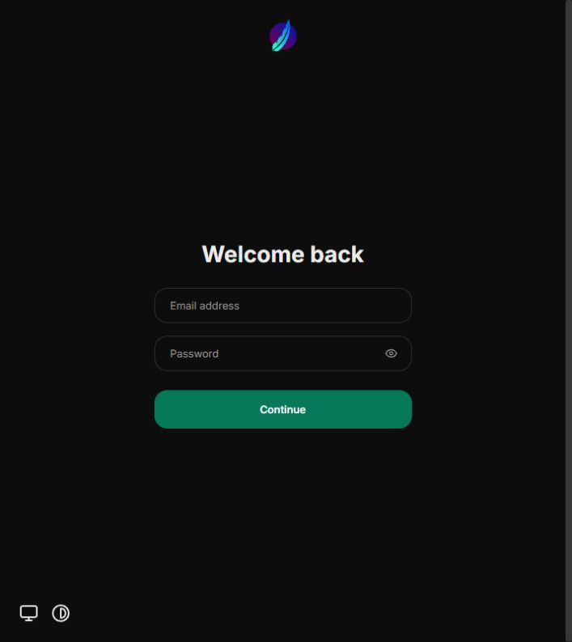
Before: original LibreChat v0.8.8 identity, captured 24 November in a fresh isolated local reference.
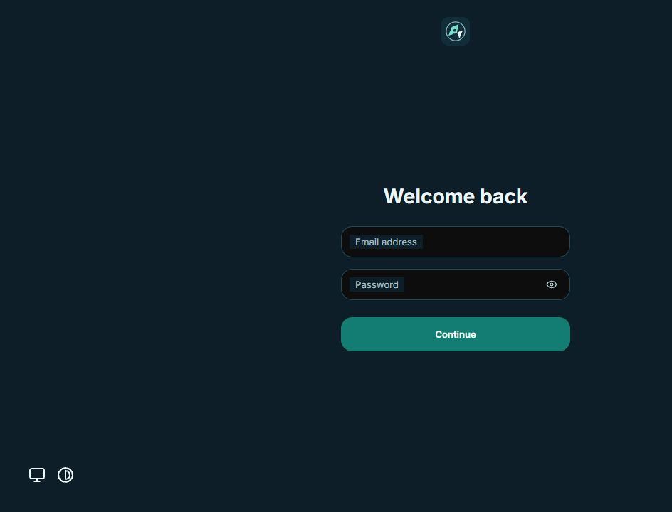
After: authentic APICompass HTTPS login, captured 23 November. The original welcome heading remains.
Both use the same pinned upstream image. The reference had empty isolated storage and no provider key; its temporary resources were removed. Identity changes are visible here; domain instructions, invented data and AWS integration are evidenced separately. Capture method and cleanup.
Source and contribution attribution: third-party notice. All stack components retain their own licences; the LibreChat MIT licence does not relicense MongoDB or the provider service.
From a question to a checked row.
The model selects an allowlisted operation and explains structured output. Python code applies the rules. This division makes a factual result reproducible even when the explanation is imperfect.
User → APICompassInvented question in the branded LibreChat UI. Normal cloud login and real domain questions verified.
APICompass → GeminiExternal model receives question, instructions and required tool output. No model is hosted on AWS.
Action → DataCheckOne action exposes four fixed read operations. Cloud saved private action and restored action execution verified.
DataCheck → sourceVersioned private S3 source verified against the fresh cloud tool result and source hash.
Facts → explanationGemini explains the findings. User checks its answer against the tool facts.
E-18 · Logical question flow, with implemented and intended boundaries explicitly labelled. The reported AWS runtime uses Caddy HTTPS, chat, authenticated private MongoDB and DataCheck on one Singapore EC2 host, with a scoped role, private versioned S3 and runtime SecureString. Gemini is external. All 40 release files now match the clean manifest for source 6b12aeb; the locally built immutable bundle has not been uploaded to S3. CloudWatch dashboard, six alarms, SNS notifications and the regional audit trail are deployed. Question telemetry and the tested restore have their own linked proof; the single host is a shared failure domain.
A deliberately narrow interface
Read operation
Purpose
GET /datasets
List the allowed dataset IDs and versions.
GET /datasets/{id}/profile
Return row count, columns, missing counts and defined numeric summaries.
GET /datasets/{id}/issues
Return exact totals and a bounded findings sample with explicit truncation.
GET /rules
Describe rule IDs, parameters and ruleset versions.
Liveness and readiness are operational routes outside the model's action schema. Unknown dataset IDs return 404. Malformed or unavailable sources return a controlled 503 rather than an empty “clean” report. Production configuration is designed to fail closed if authentication or versioned storage settings are absent. Scoped live allow/deny probes are recorded in the security chapter, with their test limits.
The data contract makes counting unambiguous
There are 180 invented records, 60 per dataset and three columns per file. Row 1 is the first data row, excluding the header. Validation trims surrounding whitespace but preserves the observed value for tracing. Every occurrence of a repeated nonempty ID is flagged; a repeated pair produces two row findings. Missing values skip further checks for that field. Type failures skip range checks.
Frozen fixture contract
Dataset version
Numeric field & bounds
Allowed categories
Golden totals
inventory-v2
quantity: integer ≥0
active, archived
6 findings / 6 rows
shipments-v2
weight_kg: integer 1–1000 inclusive
pending, in_transit, delivered
7 findings / 7 rows
equipment-v2
service_hours: integer 0–100000 inclusive
operational, maintenance, retired
7 findings / 7 rows
Whole-kilogram shipment weights are a demonstration rule, not a universal business constraint. Profiles include parseable out-of-range integers and state excluded invalid values. Findings default to a maximum of 20; a requested limit must be 1–100. Exact issue totals describe the full dataset even when the returned sample is truncated. No pagination is provided in this version.
Appendix C record · Updated to the 24 November evidence snapshot. Student review, contact details and final deployment fields are pending.
1. What it does
APICompass helps users inspect invented operational datasets in ordinary language. DataCheck computes explicit quality findings; Gemini explains those returned facts. It cannot repair data or establish causes absent from the records.
2. Who uses it, and who must not
Intended users are students and reviewers learning data inspection and small-system operations. It is not a production quality-assurance service or a tool for medical advice, grading, employment, eligibility or other consequential decisions about identifiable people. Real personal records must never be entered in prompts or fixtures.
3. Base system
LibreChat v0.8.8, by the LibreChat project and contributors, provides accounts, saved conversations, model-provider integration and the tool UI. Its source and MIT attribution are recorded. Gemini is an externally hosted model; this project does not train, fine-tune or host it.
4. What changed
The project adds its own identity, three synthetic datasets, deterministic validation service, explicit data contract, bounded four-operation action, original domain instructions and tests. The reskin comparison records the original behavior, project behavior and reason for each change. AWS release/dataset upload, healthy runtime, normal HTTPS login and real Gemini/DataCheck/S3 answers are verified; restored saved-action execution also passed.
5. Data
Three original CSV fixtures contain 180 invented rows and no real people, customer records or operational secrets. SHA-256 manifests identify exact source bytes. Fixture reuse licensing awaits the student's decision. Gemini receives the synthetic question, instructions and tool results necessary for the answer; the base provider integration also handles its normal account metadata. Instruction-like cell values must be treated as data.
6. How good it is
The initial v1 local result is 10 passes out of 13 executed cases, approximately 76.9%. Two planned cases were not run. A pass requires correct tool scope/arguments and a factually supported, complete answer for the case. Codex-assisted review awaits student verification. One observed answer ended with a provider stream parsing failure; another miscounted duplicate findings. Four later v3 targeted checks passed, without replacing the initial denominator.
7. How it is served
The initial local environment was Windows Docker Desktop. The deployed runtime uses chat, authenticated private MongoDB and DataCheck containers behind Caddy HTTPS on a Singapore EC2 host. Verified model configuration is Gemini 3.5 Flash Lite, thinking off, maximum output 1024. User credentials were entered privately in the app. The student confirmed Gemini API free-tier access on 24 November; no provider invoice was inspected. Requests remain subject to the provider quota. If a source fails, DataCheck returns 503; there is no offline model fallback.
AWS foundation and compute are in Singapore, ap-southeast-1. The t3.small host completed provisioning on 22 November at 23:55:39 Philippine time, with encrypted 24 GiB EBS. Bootstrap READY and host-role SecureString retrieval are verified. The integration owner later verified runtime startup, authenticated MongoDB/DataCheck health and a branded public HTTPS login without a certificate bypass. Production enrollment, the private action and fresh cloud Gemini-to-tool answers subsequently passed. A separate fresh-volume restore verified normal login, saved conversation/action and a new correct answer. The protected application is at https://52.221.29.90.sslip.io/; credentials are shared only privately when needed.
8. Limitations and risks
The model can choose the wrong tool, omit a finding, miscount a group, invent a cause or encounter a provider error. Users must check source versions, totals, row references and truncation. The fixed integer rules and tiny fixtures do not represent all real data-quality work. Production requires versioned S3 bytes with matching hashes and live IAM/network/TLS verification; local tests alone cannot establish that security boundary.
9. Operational summary
Code is maintained in the APICompass + DataCheck project repository; the public repository contains the reviewed source and report; the public Pages site is live. Six alarms and a populated dashboard observe the service. Database backup and five-minute health jobs each have two genuine unattended successes. Backup proof used a disclosed fifteen-minute assessment cadence before restoring the six-hour production schedule. A tested recovery-isolation runbook, fresh-volume recovery and ALARM/OK email receipt are recorded. The whole-drill recovery observation was 1438 seconds; backup age was 572 seconds, with the limits explained in the recovery chapter. Student owner/contact and final submission review remain outstanding.
The initial assistant evaluation passed 10 of 13 executed cases. Three failures remain visible. A later prompt revision passed four targeted checks; it has no fresh full-suite accuracy score.
10 passed3 failed
Passed: 10/13Failed: 3/13Not run: 2 of 15 planned
E-04 · Observed 21 November 2026, local Docker, v1 instructions, Gemini 3.5 Flash Lite. Bar denominator is the 13 executed cases; unrun cases are excluded, not counted as passes. This is answer evaluation, not uptime or API-test coverage. Source: recorded score arithmetic.
Method and what it establishes
The fixed evaluation contains 15 planned cases covering catalog, profiles, findings, rules, follow-ups, bounded results, unsupported requests and failure handling. Thirteen were executed locally. A case passes only when both tool_correct and answer_supported are true. The scoring script computes arithmetic over reviewed verdicts; it does not automatically judge factual correctness. Student review of the Codex-assisted adjudication is pending.
The integration owner reports 123 Python and 47 Node tests passing for source 6b12aeb on 24 November, extending earlier dated milestones. These are separate software results. They compare explicit expected findings, errors, authentication, version/hash checks and privacy behavior, including an actual server subprocess and SDK-stubbed S3 operations. They do not represent assistant evaluation questions or establish live S3 permissions. The earlier 32-test run took 5.726 seconds; that historical duration is not the new suite duration or a service benchmark.
Three real questions and observed outcomes
The answers below are observation summaries from retained evaluation records, not verbatim full transcripts. Historical records retain their original provenance; actual cloud success, limitation and the new provider-failure screenshots appear alongside the relevant observations.
Passed · v1 case 2
“Inspect inventory. Give row count, issue count, affected-row count and all findings.”
The observed answer reported 60 rows, six issues across six rows and all six expected findings. The duplicate ID pair counts as two row findings. The review matched those results to the frozen fixture contract.
“Show only two shipment findings, but tell me the exact totals.”
The answer labelled two duplicate-row findings as a truncated sample and preserved the full totals: seven issues across seven affected rows. This tests whether the assistant distinguishes returned sample size from overall result size.
“Inspect shipments. Give row count, issue count, affected-row count and all findings.”
The answer gave correct totals and the first four findings, then stopped during “Missing Required Value” with a GoogleGenerativeAI stream parse error. It did not deliver every requested finding, so it failed. The underlying cause of the provider stream failure is unconfirmed.
A fresh shipments report returned 60 rows, 7 findings and 7 affected rows with matching S3-backed versions and request ID. A supplier/delay question correctly declined to invent unavailable causes. In a fresh conversation, “Check my data” listed the three datasets and asked which to inspect. These three targeted cloud cases are separate from the historical 10/13 score and the four local v3 retests.
“Inspect shipments. Give row count, issue count, affected-row count and all findings.”
DataCheck returned the correct S3-backed 60/7/7 facts, but the model stream stopped with “Failed to parse stream” and no complete final answer. The terminal telemetry event at 23 November 17:05:04.276 UTC recorded failed/missing_final after 91718.898 ms, despite HTTP 200. A second concise attempt also stopped after partial output. The error occurred in the historical evaluation before this logging change; its recurring cause remains under investigation. Correct tool facts do not turn an incomplete answer into a pass.
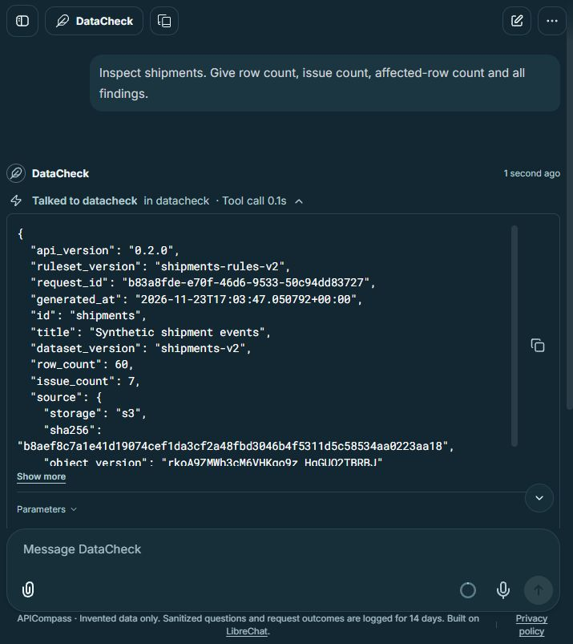
E-03 · Genuine new failure, separate from the historical local case. Dated facts and diagnostic limits. No new full evaluation score or provider fix is claimed.
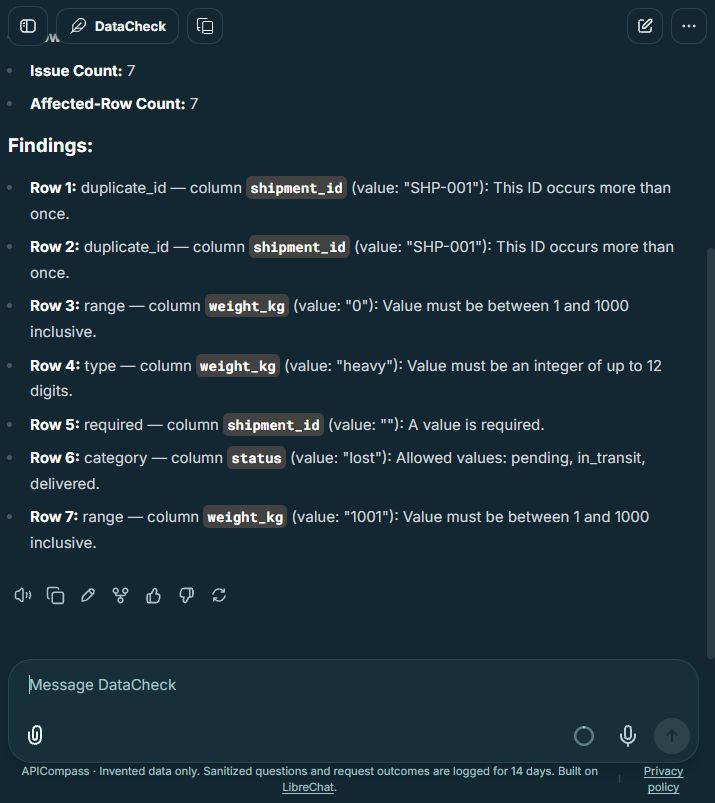
24 November: a fresh complete answer with the original SDK restored, request 18fd5a9c-2225-4212-ba36-02710bb658a7. A targeted pass, not a new aggregate quality score.
The other failures were unnecessary all-dataset inspection for “Check my data” and a causal answer that correctly refused an unsupported explanation but counted two duplicate-row findings as one. V2 improved clarification/report completion but over-clarified a prompt that already named shipments. V3 recognizes selected datasets, checks actual profile columns for causal questions and explicitly counts every duplicate row.
The three failed-case retests plus a new duplicate-count question passed under v3. This selection deliberately targets known weaknesses, so it cannot estimate performance across the full original set or prove stream errors cannot recur. The deployed stream failures and a later full successful answer are recorded separately. A fresh complete fixed-suite run and student adjudication remain pending. No matched before/after performance improvement is claimed.
The operations dashboard and six alarms are deployed. Actual question events reached CloudWatch, and the student confirmed receipt of both a health ALARM email and its recovery OK email.
Three project log groups have a 14-day retention setting: runtime, questions and jobs. The questions, jobs and runtime group listings were independently checked and each showed two-week retention. Real question, database and jobs destination events were independently read back. Question telemetry contains a generated question ID, app/model-client version, terminal outcome, HTTP status, timestamp and observed duration. Earlier telemetry omitted raw prompts. Production now explicitly opts into bounded sanitized literal-question capture with an invented-data/14-day logging footer. Suspected sensitive input is omitted with a status; this is not universal personal-data detection. Credentials and dataset values remain excluded. The synthetic prompts are mapped to their observed events in the evidence record; these question IDs are distinct from DataCheck API request IDs.
Observed cloud question attempts · 23 November
Question
UTC completion
Outcome
Duration
Fresh shipments issue report
11:22:47.275
Succeeded; correct 60/7/7
3479.704 ms
Check my data, in a fresh conversation
11:23:10.397
Succeeded; listed choices and asked which dataset
1834.423 ms
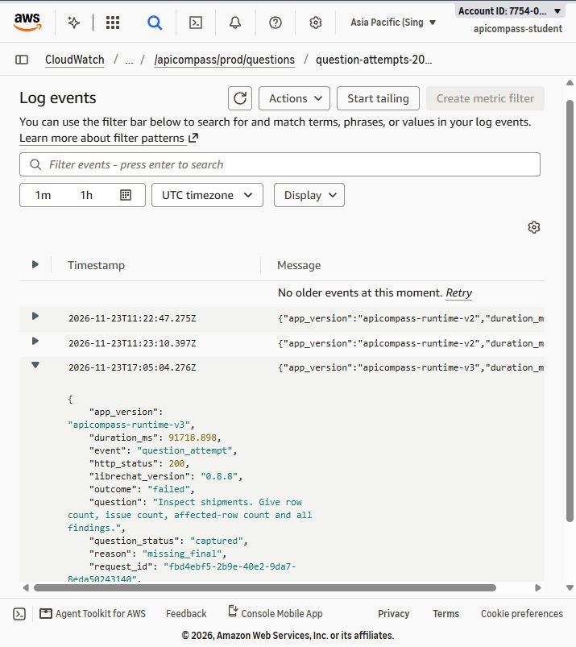
Actual literal-question destination readback: runtime-v3, captured synthetic prompt, failed/missing_final, HTTP 200, 91718.898 ms. HTTP success did not establish a complete model answer. See the dated logging record for the exact UTC event.
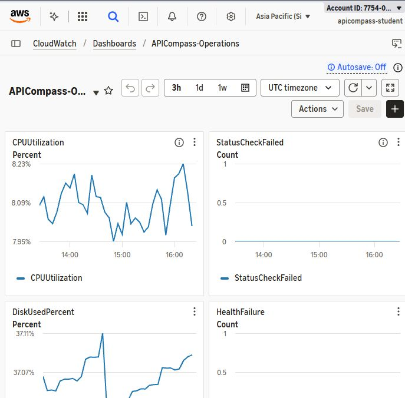
E-06 · Actual dashboard capture, 24 November. The visible three-hour UTC window includes CPU, status and disk widgets. Separate one-day request/duration/failure views below complete signal coverage; these are not a long-term baseline.
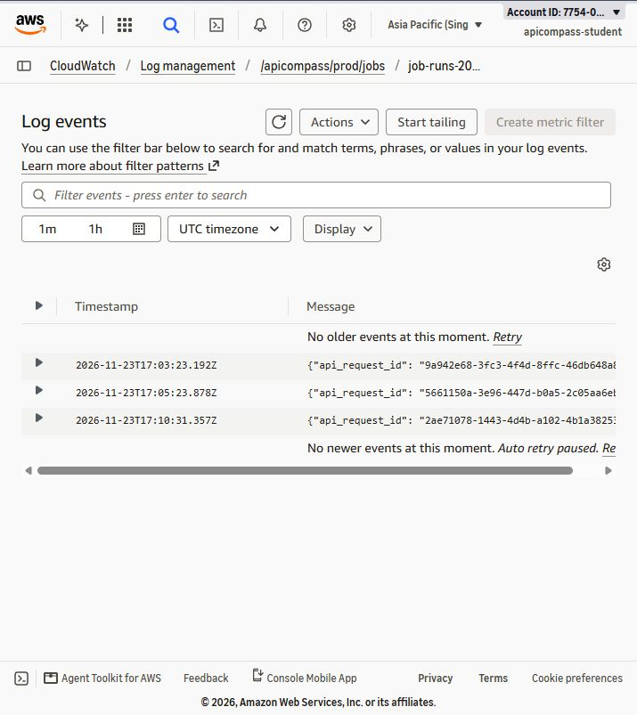
Actual jobs destination readback: one operator-started health event at 17:03:23.192 UTC is separate from scheduled successes at 17:05:23.878 and 17:10:31.357 UTC on 23 November. Durations were 1227.26, 1573.4 and 1434.27 ms. These supplement earlier unattended proof; no new scheduled backup after this update is claimed.
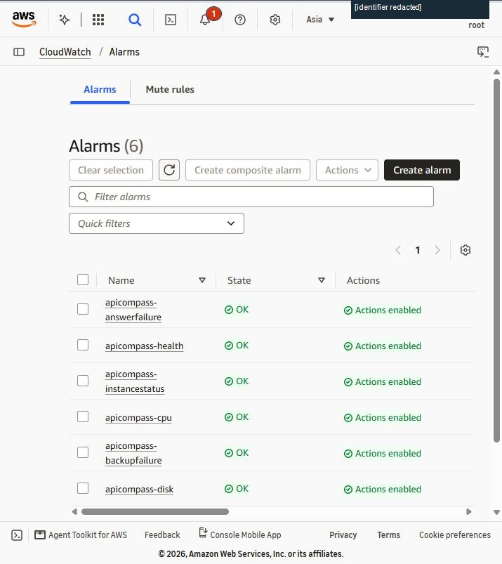
E-07 · Six actual project alarms, all OK with actions enabled at the 24 November read-only inventory. Earlier ALARM/OK transitions remain in the incident record.
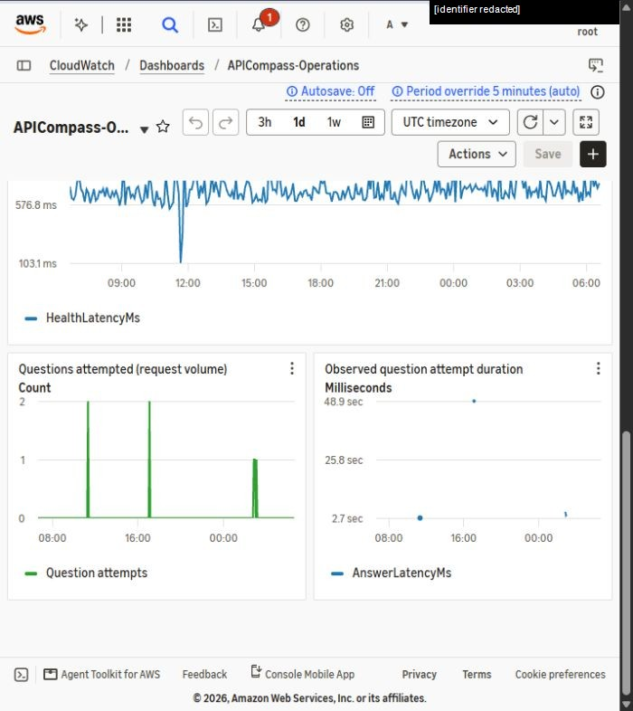
Request volume and observed answer-attempt duration, rolling one-day UTC dashboard view captured 24 November around 06:43 UTC. Five-minute aggregation; the graph is not a per-attempt latency table.
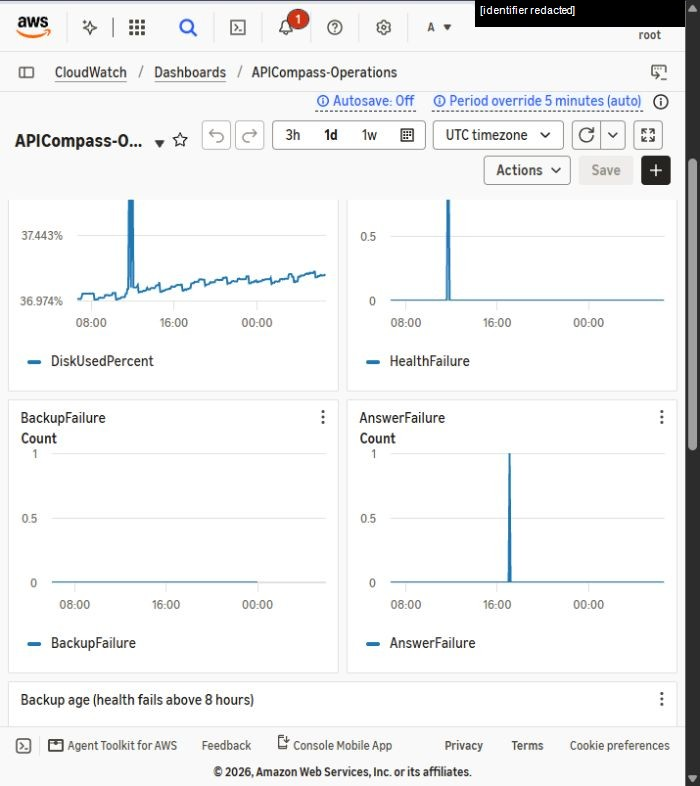
Actual health and answer failures remain visible beside backup monitoring in the same one-day window. These supplement the CPU/status/disk capture; success is not inferred from HTTP status alone.
Signals and notification route
The dashboard includes EC2 CPU and status checks, disk use, synthetic health failures, backup failure and age, answer failures, question volume and observed question duration. Synthetic API-check latency and full question-attempt latency are labelled separately. Question volume is the sum of success and failure counts; duration is emitted only for an observed attempt, not an idle heartbeat.
Six deployed alarms
Alarm
Purpose
CPU
Detect sustained host pressure.
Instance status
Detect EC2 status-check failures.
Disk
Detect disk usage above 85% over two five-minute evaluations.
Detect unsuccessful or missing backup telemetry over the six-hour operating interval.
Answer failure
Detect failed observed question attempts; this is not an automated semantic-accuracy score.
All six have ALARM and OK actions to the project SNS topic. CloudWatch history independently showed the health alarm enter ALARM at 11:41:51 UTC and return to OK at 11:51:51 UTC, with successful notification actions at both times. The student separately confirmed both messages arrived. This distinguishes topic publishing evidence, inbox attestation and the earlier subscription confirmation.
A monitoring gap found and corrected
The first two successful cloud answers were unmonitored: the hook watched the base chat path, while pinned LibreChat sends saved-agent turns to a path ending in /chat/agents. A regression reproduced zero events, the exact route was added, and all 17 telemetry tests passed. A fresh real question then appeared in CloudWatch. Earlier unmonitored answers are not retroactively counted.
The MongoDB envelope shipper also failed its initial 500-event cap. A bounded five-minute probe found 865 events. The cap became 2000 with a 900 KiB upload-byte guard; the 1000-event regression and all 10 database shipper tests passed. The actual service then delivered 730 sanitized envelopes. Messages, attributes, usernames, connection strings and documents are excluded. Job journals provide automation provenance; actual terminal job events were subsequently read back in CloudWatch, including two regular scheduled health runs after the logging update.
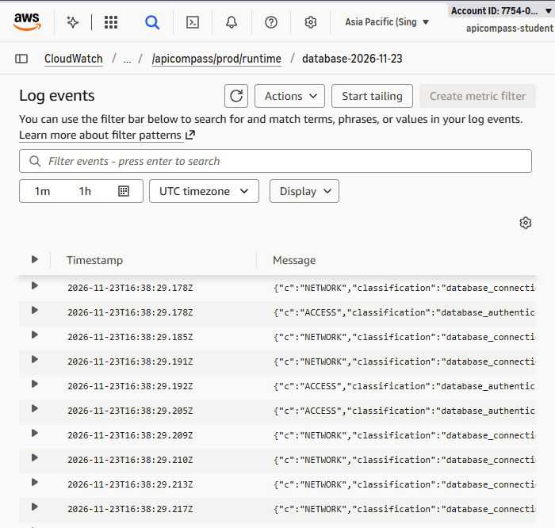
E-09 · Database readback verified on 24 November under the MFA-protected individual operator: runtime stream database-2026-11-23 loaded 202 events, including real 23 November 16:38:29 UTC NETWORK/database_connection and ACCESS/database_authentication records. Fixed enum metadata is retained; raw messages, attributes, documents and credentials are excluded. The 202 loaded events are a console view, not a new delivery total.
Restore the account, conversation and working action.
A versioned S3 database backup was restored into a separate assessment stack. Normal account login, the saved conversation and the restored private action all passed, followed by a fresh Gemini/DataCheck/S3 answer.
Recovery covers authenticated users, conversations, messages, agents and encrypted action configuration, plus fixed data/rule versions and access to the existing runtime secret. Production volumes were preserved. The assessment used five fresh volumes on its own Docker network; only chat had a host binding, at loopback port 3081. The model still ran outside AWS.
Baseline and restored state
Asset
Baseline
Restored
Users
1
1; normal login passed
Conversations / messages
2 / 8
2 / 8; selected conversation had 6 messages
Agents / actions
1 / 1
1 / 1; owned action verified
Fresh shipments tool answer
60 rows, 7 findings, 7 affected rows
60 / 7 / 7; correct versions and a new API request ID
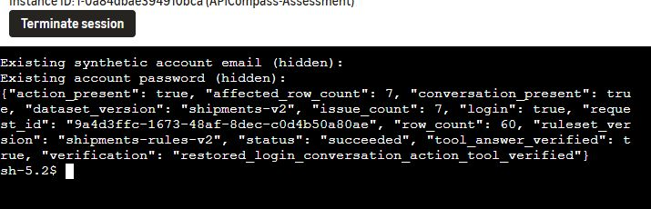
The real verifier used normal login and inspected the complete tool result and final answer. HTTP 200 or matching record counts alone could not pass this gate.
Measured recovery, with its limits
The fresh backup was requested at 11:27:09 UTC on 23 November; upload finished with a real S3 VersionId and a verified archive checksum. First restore attempt: 11:36:41 UTC. The successful restored answer was persisted at 11:59:45.397 UTC; success was independently observed at 12:00:39 UTC. The conservative whole-drill recovery duration is 23 minutes 58 seconds, including failed attempts, diagnosis, deployment corrections, private sign-ins and confirmation. It is not an automated restore-speed benchmark.
Backup age at the initial simulated incident was 9 minutes 32 seconds, measured conservatively from backup request time. This is possible recovery-point exposure for the drill, not observed production data loss or a guaranteed RPO. The original database remained available, so no production deletion was needed to prove recovery.
Retention and cleanup
Backups use a private, versioned, encrypted S3 bucket. Current backup objects have a 14-day lifecycle, with separate 14-day noncurrent-version retention; these are different clocks and do not promise exact deletion timing. Scheduled six-hour backups have separate unattended-run evidence. The specific fresh backup used for this drill was operator-triggered.
After the successful check, scoped teardown removed three assessment containers, one network and five volumes. Independent inventory returned zero resources in that assessment scope; the fallback cleanup timer was stopped and production health passed again. Earlier failed attempts and their isolation-label fix are retained in the incident record.
Root MFA and private bucket settings were observed in AWS. The individual operator apicompass-student completed password and MFA setup, signed in on 24 November and opened the permitted CloudWatch dashboard. No access keys were created. Runtime role secret retrieval and real provider/tool use are verified; a scoped allowed S3 read and rejected out-of-prefix request are now recorded, with their test limits stated.
Risk, control and evidence boundary
Risk
Control & status
What still needs proof
Privileged-account compromise
Root MFA enabled; no active root access keys observed.
Individual password/MFA setup and console login passed; the dashboard screenshot shows the student identity. The IAM detail shows one MFA device, zero access keys and exactly one directly attached APICompassStudentOperator policy. Redacted captures appear below; routine work uses this individual identity.
Public or unencrypted object access
Bucket public access blocking on, ACLs disabled, SSE-S3 and TLS-deny policy observed.
Matching versioned S3 read passed; a nonexistent key outside the allowed prefixes returned AccessDenied. An insecure-transport request was not separately probed.
Role credential source and SecureString use verified. Allowed fixture hash/version and rejected out-of-prefix request passed; no static workload credentials were used.
Secret leakage
Credentials entered privately in local UI; public evidence omits values. Query-string logging regression fixed locally.
SecureString created privately and eight required fields verified by host role; healthy runtime startup is reported; real provider/tool use and sanitized question logs verified; question, database and jobs destination readback passed with two-week retention.
Exposed database/service ports
Deployed MongoDB and DataCheck are private container services; Caddy exposes HTTPS. The isolated recovery chat was loopback-only.
AWS runtime reports authenticated private MongoDB and working HTTPS login; host-loopback probes found no listener on 8000/27017. HTTPS works; future certificate renewal has not been observed.
Untraceable changes
Versioned template and recorded CloudFormation change set.
Regional trail was Logging with management API activity All; last delivery 24 November 10:47:33 UTC+08 and validation 10:34:02. The isolation runbook records tested recovery/cleanup. Singapore single-region trail does not establish global IAM-event coverage.
Model follows malicious cell text
Fixed tools and explicit instruction to treat cell strings as data.
Preserve adversarial test results; verify the deployed action remains bounded.
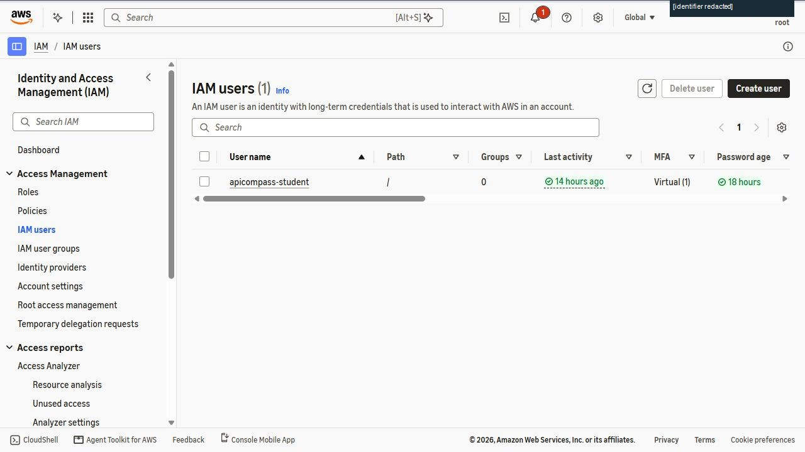
E-12 · Actual IAM user list: one individual student identity, zero groups, virtual MFA. Administrator header identifiers are covered.
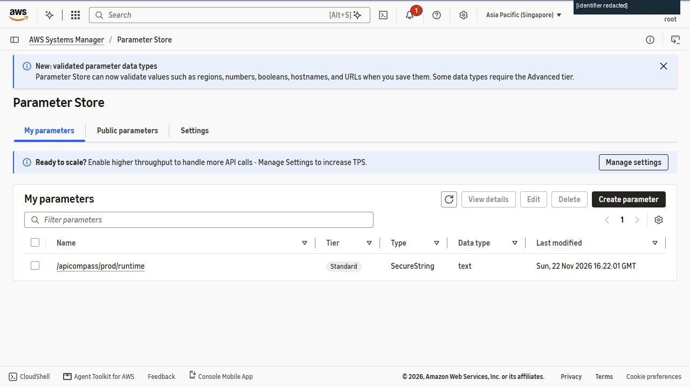
E-13 · Runtime parameter is Standard SecureString. No parameter value was opened for this capture.
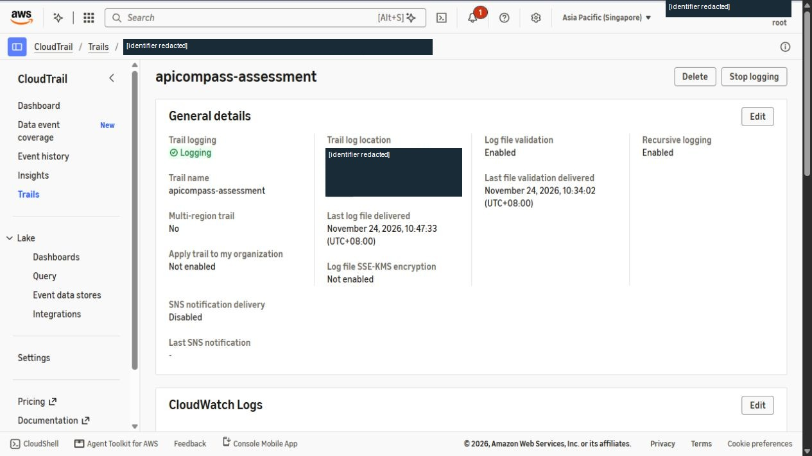
Regional audit trail Logging, with genuine delivery and validation timestamps. This is not global IAM audit coverage.
Dated security changes · before and after
Observed changes; local regressions and live acceptance are distinguished
Risk
Before
After / evidence date
Query-string leakage
Initial default HTTP logger could include URL query text.
Default logger disabled; privacy regression passed in the 21 November milestone.
Overprivileged routine operation
Initial cloud provisioning used the administrator session.
Individual student console account with MFA and scoped operator policy; own-dashboard access verified 24 November. Administrator retained for exceptional read-only billing/audit inventory.
Unproven runtime boundary
Initial local tests used controlled storage stubs.
Live role credential source, allowed S3 hash/version, denied out-of-prefix request and API token/error probes passed 24 November.
Missing audit delivery evidence
Trail template/deployment alone did not prove delivery.
CloudTrail Logging plus actual file/validation delivery timestamps captured 24 November; regional coverage limit retained.
Integrity before explanation
The storage design requires explicit S3 object versions and SHA-256 matching to frozen fixture bytes. It rejects inaccessible, oversized or mismatched sources without silently falling back to local data. SDK-stubbed tests cover these branches. These tests establish controlled failure behavior. The separate live allow/deny probes support the tested prefix boundary; they do not exhaust every effective-permission path.
Two locally found defects were fixed with regression evidence: default HTTP access logging could leak query strings, and text-mode source hashing could normalize raw bytes. The full suite passed after disabling the default logger and hashing original bytes. These are concrete local improvements; they are not evidence that the whole cloud deployment is secure.
All demonstration data is invented. Provider-bound prompts and results must remain synthetic. Public evidence should show setting names and sanitized outcomes while omitting account numbers, notification addresses, credentials and private resource identifiers. Before publishing, inspect screenshots, history, archives and video as well as text.
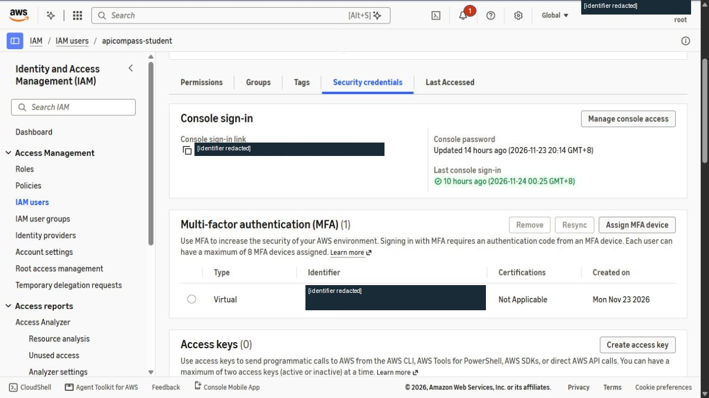
One MFA device and zero access keys. Private identifiers covered with opaque rectangles; original preserved privately.
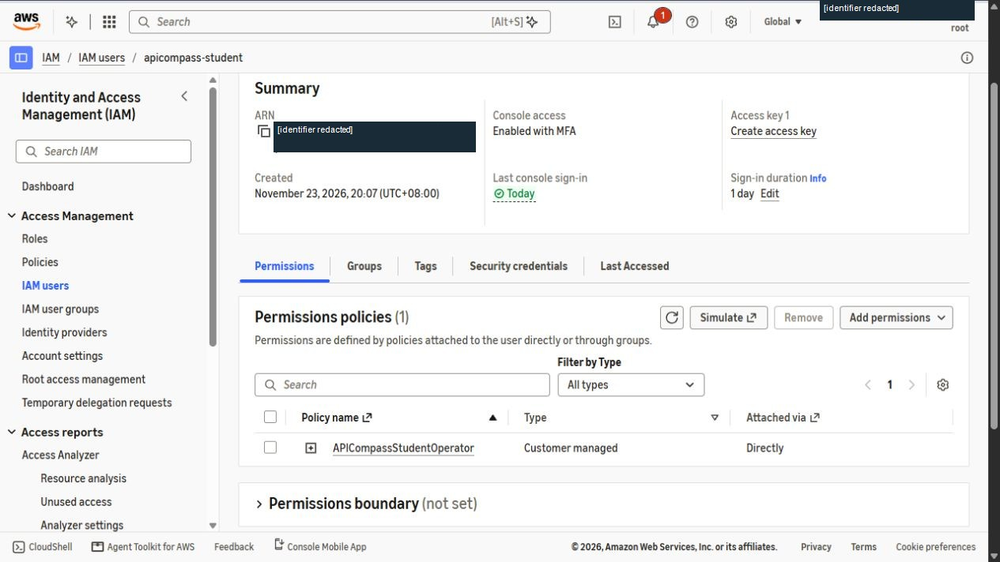
One directly attached scoped operator policy. This administrator read-only inventory is separate from routine student operation.
The two required jobs have genuine scheduled successes. A real recovery-isolation fault was detected by health monitoring, investigated, corrected and followed by an OK notification.
Database backup
The systemd timer runs six-hourly at UTC 00/06/12/18:15 with jitter. A locked job briefly stops the running chat to quiesce application writes, makes a bounded authenticated MongoDB dump, restores chat availability and uploads a unique versioned archive to S3 with checksum/size verification. This is a logical dump, not a transactionally proven point-in-time snapshot. Timeout and cleanup paths prevent an abandoned temporary archive or indefinitely paused chat.
Two actual unattended assessment-calendar successes were captured at 05:30:33.686055 UTC and 05:45:14.375573 UTC on 23 November, lasting 3610.58 ms and 2962.33 ms. The assessment temporarily used a transparent fifteen-minute calendar; the regular six-hour calendar was restored. A timer-reactivation run at 05:42 is excluded from these two scheduled proofs. A later manual backup supplied the successful restore drill.
Synthetic health check
The five-minute job verifies readiness, all three allowed datasets, S3 source/version information and the known shipments findings, not merely a listening process. It reports health, duration, disk usage and backup age; an old or missing backup fails readiness. Two unattended successes were captured at 05:40:30.814969 UTC and 05:50:31.033152 UTC, lasting 928.67 ms and 1114.52 ms. Invocation and API request IDs are preserved in the linked journal observations.
Resolved fault: inherited production labels
The custom DataCheck image carried a Compose project label. A recovery container inherited that label, so production discovery found two DataCheck targets and health checks failed closed. Cleanup guards also refused the inconsistent assessment scope. The volumes remained separate, but the operational selector was no longer isolated.
The correction explicitly overrides Compose project/service labels on every recovery container while retaining assessment ownership labels. A new regression failed before the fix; all 14 recovery tests passed afterward. Live checks then found only the four original production containers under the production selector, the separate assessment inventory succeeded, the restored model/tool gate passed and scoped teardown returned zero resources.
CloudWatch recorded ALARM at 11:41:51 UTC and OK at 11:51:51 UTC. Both notification actions succeeded, and the student confirmed receipt of both emails. The earlier login failure has no confirmed root cause and is not falsely attributed to this label defect. A failed differential deployment and its sequencing correction are also disclosed.
Tested runbook · recovery isolation
Check the health outcome, alarm time and number of production-labelled targets. Never print container environments or decrypted secrets.
Pause further recovery launches. Inspect the exact assessment name and ownership labels; preserve original production volumes.
Apply the label correction using complete old/new source hashes. Abort dependent actions if installation fails.
Restore an exact S3 object version into a fresh scope. Check disjoint volumes, loopback-only access and unambiguous production discovery.
Privately authenticate the existing account. Require the saved conversation/action and a fresh correct tool-backed answer.
Remove only the verified assessment scope; confirm zero containers/networks/volumes, stop its fallback cleanup timer and rerun production health. Confirm recovery notification delivery.
This evidence-based review was refreshed on 24 November after real cloud operation and recovery. It records progress and remaining risks; it is not an AWS Well-Architected Tool certification or a measured before/after study.
E-17 · Six-pillar review, 24 November 2026
Pillar
Verdict
Evidence and next action
Operational excellence
Adequate, with evidence gaps
Populated dashboard, six alarms, question events, two unattended runs per job and a tested incident runbook exist. Question/database/jobs destination readback and 40-file release parity passed. A fresh complete answer passed with the original SDK restored. Retain the intermittent stream failure as a dependency risk and rehearse before recording.
Security
Adequate controls; verification incomplete
Individual MFA login, runtime role, private versioned storage, SecureString use and real tool operation are recorded. Scoped live prefix/API probes and sanitized IAM captures now pass. Maintain least privilege and observe certificate renewal when due. Regional CloudTrail does not establish global IAM coverage.
Reliability
Recovery demonstrated; single-host risk
Fresh-volume login, saved state and new tool answer passed; assessment teardown returned zero resources. Whole-drill observation was 1438 seconds, with 572-second backup-age exposure. These are drill observations, not guaranteed objectives or automated restore speed.
Performance efficiency
Measurement gap
A matched ten-probe, thirty-second before/after check is recorded below. It does not establish user-answer latency, capacity, p95 or performance improvement.
Cost optimization
Budget foundation; attribution gap
US$25 budget and verified recipient are recorded. Dated account-wide equal-window costs are recorded; project-only allocation remains unavailable; temporary recovery resources were removed.
Sustainability
Small scope; measurement gap
One small host and external model keep the deployment limited. Temporary recovery resources were removed; sustained utilization and whole-project teardown are not yet established.
First remaining priority and trade-offs
The first operational priority is dependable failure handling around the external model: two attempts failed after correct tool facts, while a later full answer passed after restoring the original SDK. No parser root cause or permanent fix is claimed. Literal question/jobs/database readback, scoped permission probes and all 40 runtime-file hashes pass. Preserve these dated observations and rehearse the current path before recording.
The single-host deployment reduces configuration complexity and cost but gives chat, API and database a shared failure domain. Off-host backups and the demonstrated isolated recovery reduce recovery risk; they do not provide high availability. The static report is separate from the AWS application.
Matched short probes · logging update
The same ten readiness-plus-shipments probes ran at three-second spacing over thirty-second monotonic windows before and after source 6b12aeb. Both returned ten correct 60/7/7 results. The UTC record spans 23 November 16:58:18.585–16:58:49.124 before and 17:04:51.756–17:05:22.071 after; start stamps precede setup, which is excluded from probe/window timing.
Same workload, same measurement method; no improvement claimed
Measure
Before
After
Correct probes
10/10
10/10
Mean probe duration
435.586 ms
440.767 ms
Maximum probe duration
780.166 ms
829.910 ms
Observed host CPU
11.816%
12.961%
Disk used
37.049%
37.055%
Each probe includes Docker-exec overhead and four S3-backed dataset checks. Background jobs were not disabled. This is not full-answer latency, uptime, capacity, p95, cost or a long-term study. No performance improvement or savings are claimed. Exact samples, UTC stamps and request IDs.
Dated cost before and after · E-16
AWS Cost Explorer used the same daily unblended Usage-charge method, with forecasts off. Before: 22 November 2026 00:00–24:00 UTC, US$0.76. After: 23 November 2026 00:00–24:00 UTC, US$1.26. These equal-length windows cover deployment and subsequent operational acceptance. They include unrelated account work, differing workloads and running hours; they are not isolated project cost or savings.
Equal 24-hour UTC windows; account-wide usage charges, credits/tax excluded
Component (USD)
22 November before
23 November after
All-account total
$0.76
$1.26
EC2 compute
$0.53
$0.90
VPC
$0.16
$0.24
EC2 Other
$0.07
$0.11
S3
$0.00
$0.01
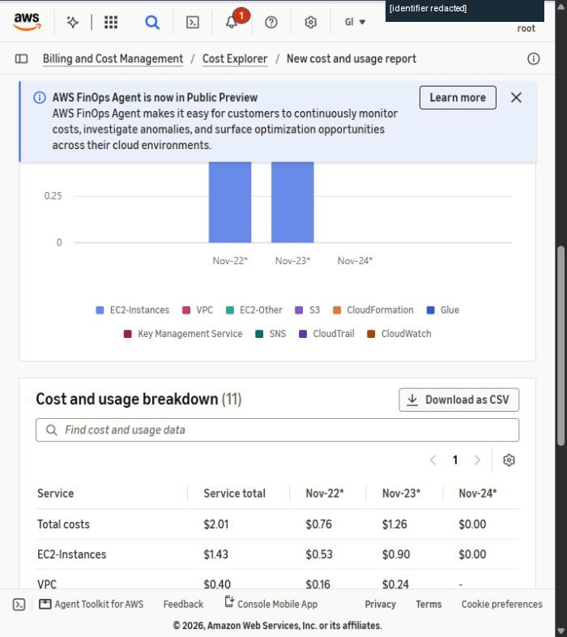
Actual billing-console observation, 24 November. The incomplete Nov-24 column is excluded. Rounded rows may not sum; current-period charges can lag and are estimated.
Gemini API is on the student-confirmed free tier: per-request provider charge is recorded as $0 under that arrangement; no provider invoice was inspected. Method, dates, components and attribution limits. Project cost-allocation and equal-workload provider-cost measurement remain future work.
Cost: an allowance and a quote, not savings
The current maximum AWS allowance is US$25. The monthly account-wide budget excludes credits/refunds and has actual alerts at US$10, US$20 and US$25 plus a forecast alert at US$25. AWS showed 1/1 notification recipient verified. Registration is not a threshold email delivery test, and budget alerts are not a hard billing cap.
The Singapore launch wizard quoted t3.small Linux at US$0.0264/hour. Six days, or 144 hours, yields US$3.8016 for instance time alone. Storage, public IPv4, logs, metrics, requests, transfer and possible CPU-credit charges are additional. No instance was launched in that observation. The t3.small host was subsequently provisioned; workload sizing and complete project actual cost still require verification.
Account credit/spend figures also include unrelated usage, so this site makes no claim about project-only actual spend or cost reduction. The foundation's auxiliary template storage must be included in the resource and teardown inventory. The dated E-16 account-wide comparison above supplies equal-window observations; lack of activated project allocation prevents a project-only result.
The report and reviewed source are published. Engineering evidence is dated and bounded; the actual student presentation and declaration are still required.
Record and review. Rehearse the seven-minute script, show a real tool-backed interaction and explain the monitoring, recovery and incident evidence. Retain the intermittent provider failure and evaluation limits.
Finish the personal artifacts. Review contributions, model account tier, evaluation and AI disclosure; sign/date Appendix H. Preserve a redacted received alert email with its timestamp to supplement the already confirmed receipt.
Host the video and hand in. Upload the actual 5–8-minute recording with captions/transcript, embed it here and verify signed-out playback. Submit the website URL and the final source ZIP containing authentic Git history through the course channel.
Improve after assessment. Extend evaluation beyond targeted retests, measure project-attributed cost and user-answer latency, strengthen provider error handling and arrange reviewed teardown.
Recorded presentation
Video embed pending
No recording has been supplied or embedded. This is a labelled content slot, with no simulated player or playback control.
Record 5–8 minutes showing upstream attribution and original contributions, one real tool-backed interaction, architecture, dashboard/alert, backup/restore, security, automations, incident, measured limitations and next steps. Include captions or a transcript and verify the eventual externally hosted embed without signing in.
Demonstration sequence
Lead with the invented-data boundary and the division between deterministic findings and model explanation. Demonstrate a selected dataset, exact totals, row references and a limitation question. Show the real AWS path only after it works. Use operational artifacts to explain each claim, keeping personal account details and secret values out of the recording.
When presenting results, retain the initial 10/13 result and explain why targeted v3 passes do not provide a new full-suite denominator. If an operational gate remains incomplete at recording time, name it clearly. A truthful limitation is more useful to a reviewer than a planned command described in the past tense.
D1 static report prepared · D2 recording script/checklist prepared, recording pending · D3 checkpoint ZIP with actual Git history extracted/checked; final archive after later edits pending. Public report hosting and anonymous access checks passed; the eventual video still needs signed-out playback verification.
Every claim needs a nearby record.
The register follows Appendix B. A partial row means useful evidence exists but the complete assessment artifact is still missing. No missing screenshot, email, deployment or restore is represented by a placeholder image.
CapturedActual dashboard capture under the individual operator; CPU/status/disk capture plus populated request-volume, duration and failure views embedded in the monitoring chapter, with date-window limits disclosed.
E-07
Six alarms
DeployedSix deployed signals; real health state transitions and notification actions in the incident record. The actual six-alarm inventory is embedded in the monitoring chapter; thresholds and missing-data behavior are maintained in the source template.
E-08
Received email with timestamp
User-attested receipt Health ALARM 11:41:51 UTC and OK 11:51:51 UTC on 23 November; both topic actions succeeded and the student confirmed both emails. Timeline and provenance; no inspected inbox screenshot claimed.
Individual access verified apicompass-student password/MFA setup, sign-in and dashboard access completed 24 November; no access keys created. Signed-in operator; MFA/access-key detail and single scoped policy captured with identifiers redacted.
E-13
Managed runtime secrets
Runtime use verified Host-role SecureString retrieval and required-field presence recorded; real provider/tool and restored encrypted action passed. Controls and actual scoped probes.
PartialBudget and candidate estimate; dated equal-window account-wide charges are shown in the results chapter; project-only attribution remains unavailable.
E-17
Six-pillar verdicts and first gap
Updated review24 November review names each pillar, supporting observations and first remaining gap. A matched short deterministic-probe comparison is recorded; project-attributed cost and user-answer performance remain unmeasured.
I used OpenAI Codex to assist with project planning, implementation, debugging, test execution, evidence review and documentation, and Gemini as the application's external model. Verification included code tests and comparison of observed tool outputs and assistant answers with the fixed synthetic-data contract; I must personally review these records, explain the work and confirm this disclosure before signing.
This is an unsigned draft, not an assertion that the student has reviewed or certified the project. Student name, contribution record, any additional AI tools actually used, final two-sentence wording and the Appendix H signature/date must be completed by the student. No signature or declaration of authorship has been generated on the student's behalf.
Appendix H · unsigned solo declaration template
Unsigned — personal review and signature pending
This template records the required affirmations for the student to review. Its presence does not certify them.
I confirm that the work submitted for SAM10 Systems Administration and Maintenance, Final Project, is my own except where clearly identified as borrowed, based on an existing open project or AI-assisted. I confirm that:
The base system is identified and credited, and its licence has been complied with.
The system described on this website and in the repository exists and can be demonstrated.
All system data/content is invented and contains no real patient, student or staff information.
The system does not make consequential decisions about identifiable people.
Submitted evidence is authentic and has not been altered to misrepresent results.
No AWS credentials, API keys or passwords are included in the submission, including repository history.
I have read and accept the course academic-integrity and ethics requirements.
The linked records are a curated public subset of project observations dated 21–24 November 2026. Private local conversation URLs and private handoff-location references were removed from public copies; request IDs, prompts, verdicts and measurement caveats were retained. Text observations are not screenshots or independent proof of a public service. The local report was checked in desktop and phone-sized browser layouts; public report hosting and anonymous linked-resource access have passed. Video playback remains pending a real recording.
Assessment structure follows the SAM10 Final Project Guidelines v3.5, Appendices B–D and H. The course assignment is not republished here. Final grading and instructor acceptance remain outside the claims of this report.